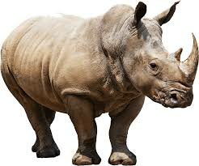
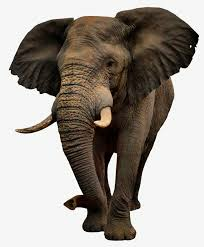
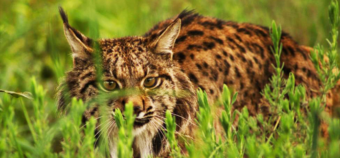
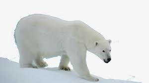
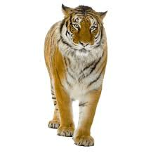
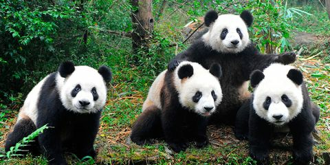
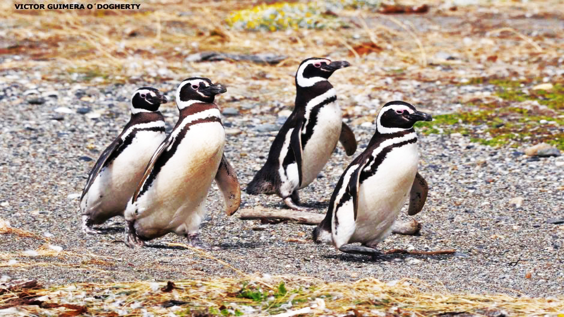
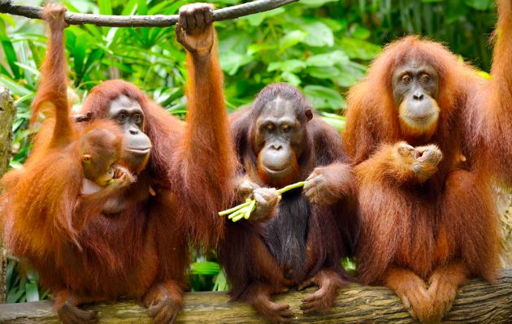
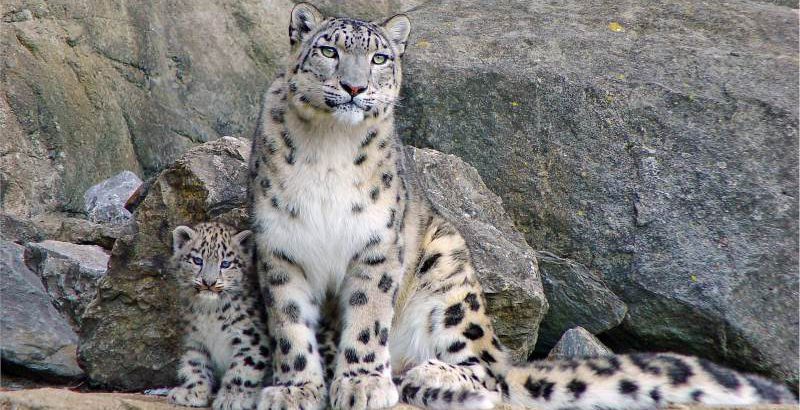

Rinoceronte
El rinoceronte es el animal más afectado, habiéndose reducido su población en un 85 por ciento en los últimos veinte años, según datos del WWF. En la actualidad quedan poco más de 10.000.
Elefante Africano
Debido al codiciado marfil de sus colmillos, con los que se fabrican muchos elementos decorativos, la población de elefante africano se ha reducido a la mitad en diez años.
Lince Ibérico
Una de las especies animales más emblemáticas de la fauna ibérica es el lince ibérico, Lynx pardinus. En la actualidad, este animal sólo se encuentra en España y en Portugal.
Oso Polar
Es quien notoriamente ha sido el más imponente entre los animales en peligro de extinción; por su escases tan importantes en todos los hábitats a los cuales estos pertenecen. Se estima que su especie podría desaparecer por completo en un tiempo estimado de 50 años; si se siguen disminuyendo las placas del hielo, pertenecientes al ártico.
Tigre de Bengala
Este pertenece al segundo animal amenazado en extinción. Este habita en ecosistemas poblados de manglares dentro de La India, es una de las especies más grandes pero que en la actualidad ha sido el más atacado desde distintos alrededores.
Por ser un felino muy atractivo ha sido víctima incansable de la caza furtiva generando no solo un desbalance en la cadena trófica, sino también cambios medioambientales que se reflejan en la fragmentación consecuente de la población y su deterioro dentro del hábitat.
Oso Panda
Menos de 2.500 ejemplares en hábitat natural. Ha disminuido considerablemente su poblacióon debido a sus creencias en la medicina tradicional asiática y al lento y dificultoso proceso de crecimiento. Está especie es un claro ejemplo de lucha contra la deforestación y la caza ilegal.
Pingüino de Magallanes
Se ha visto afectada debido a la subida de las altas temperaturas causadas por el cambio climático. Esta especie de pingüinos del sur de Argentina se está viendo en una situación crítica.
Orangután de Sumatra
Se ha visto afectado en los últimos años debido a su caza y venta como animales domésticos, así como por el aumento de la extracción del aceite de palma.
Leopardo de las Nieves
Esta especie se ve amenazada debido a la invaisón del ser humano en su hábitat natural (China, Nepal, Pakistán e India)